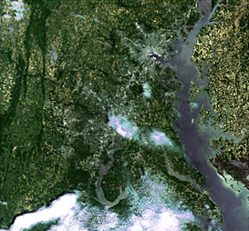
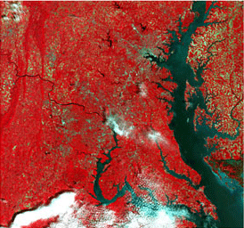

What is Spatial/GeoSpatial
Big Data
(the real one, the one that doesn't fit on a hard disk)
Open Data hipsters
(we already had standard protocols and formats in the nineties)
Not everything is Visual/Maps
(analysis, machine learning,...)
Earth Observation Services
 OSGeo ramifications
Projects - where it all started - 2006
Events: FOSS4G, codesprints,...
GeoForAll
Open GeoScience
UN Initiative
Chapters
Service Providers
Projects
Web Mapping
Content Management Systems
Desktop Applications
Geospatial Libraries
Other
Spatial Databases
Metadata Catalogs
And then there are the community projects...


Where was I?
Spatial Data Infrastructures (as a Service)
Cool name for saying: platform to manage and classify spatial data.
Catalog/Web to search + Storage (DB?) + Services to View(map)/Download (+ ETL tools)
ETL Tools
Scarce open source solutions
Catalogs - (Metadata - Services)
Standard/Interoperability focus